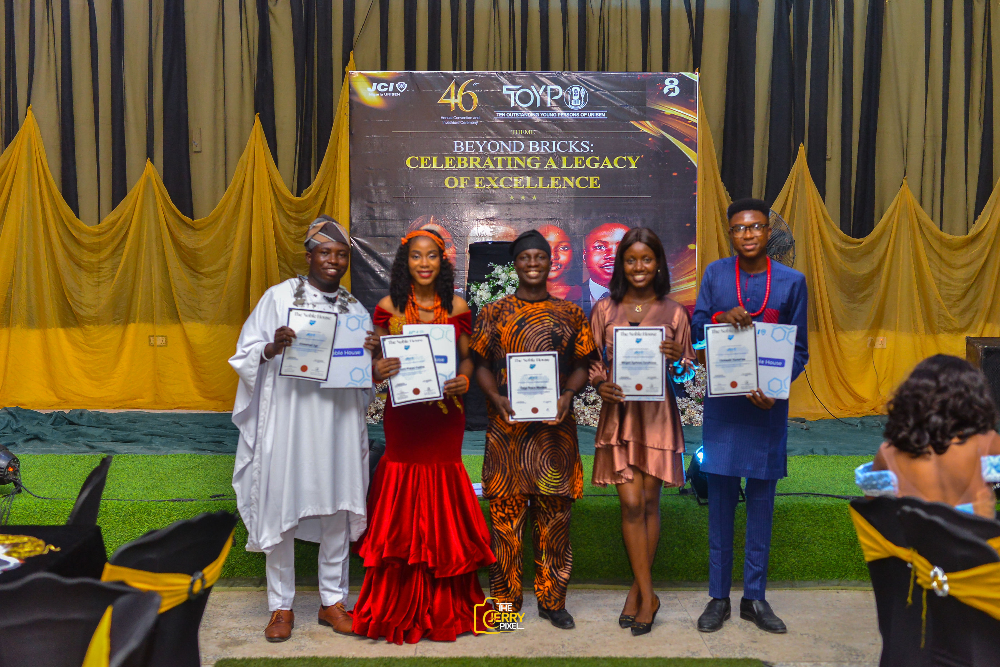
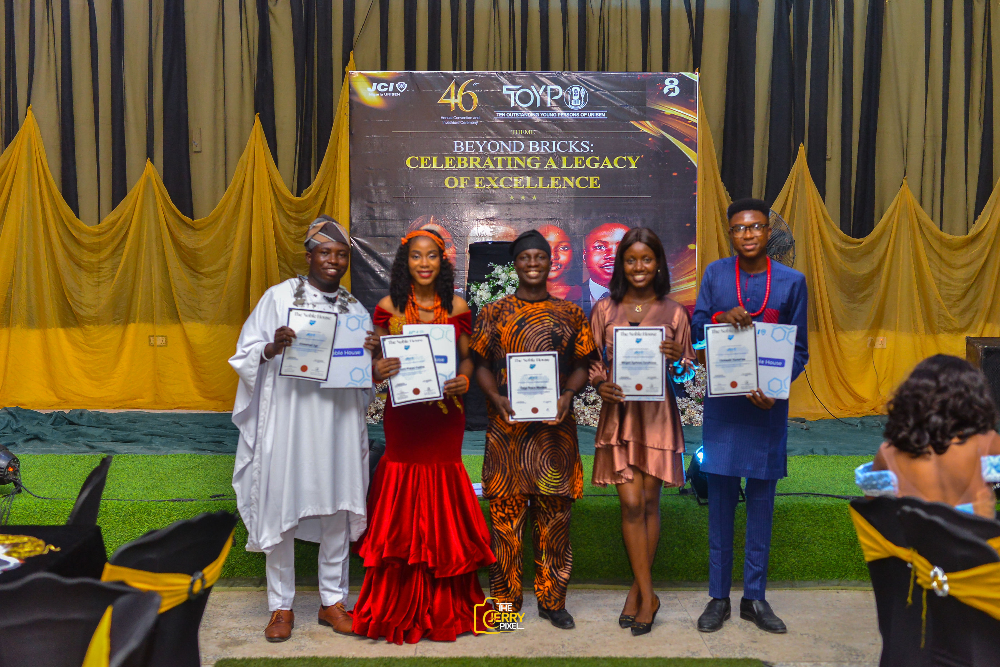

About JCIN UNIBEN
Ten Outstanding Young Persons of
University of Benin
Nominations now open!
About the JCI UNIBEN Ten Outstanding Young Persons (TOYP)
The JCI UNIBEN Ten Outstanding Young Persons (TOYP) is a flagship recognition initiative of Junior Chamber International Nigeria, University of Benin Chapter (JCIN UNIBEN). The program exists to identify, celebrate, and amplify young individuals within the University of Benin ecosystem who demonstrate exceptional leadership, innovation, and service-driven impact. TOYP UNIBEN honors outstanding young persons between the ages of 18 and 40 who embody the ideals of responsible citizenship, ethical leadership, and positive societal contribution.
These honorees represent excellence across diverse fields including entrepreneurship, academics, community development, public service, innovation, and creative industries. Through their actions, they transform challenges within the university and surrounding communities into opportunities for growth and progress. The TOYP initiative serves as a platform to formally recognize both visible and often overlooked contributions made by young changemakers in the UNIBEN community. By highlighting these stories of impact, JCIN UNIBEN inspires students and young professionals to take leadership seriously, pursue excellence, and commit to sustainable change at the local level. TOYP UNIBEN is locally implemented in alignment with the national JCI Nigeria TOYP framework and the global JCI TOYP program. This ensures that honorees from the University of Benin are positioned within a broader leadership ecosystem that values merit, integrity, and measurable impact.
Exceptional honorees may be nominated through JCI Nigeria to participate in the international JCI TOYP recognition, where outstanding young persons are selected from over 100 countries worldwide. Globally and nationally, the JCI TOYP program has recognized distinguished Nigerians who have gone on to achieve remarkable milestones across various sectors. These past honorees reflect the transformative power of youth leadership and serve as enduring examples of what purposeful action can achieve before the age of 40. At the University of Benin level, TOYP UNIBEN is more than an award—it is a leadership pipeline. Honorees become role models and ambassadors of the JCIN UNIBEN mission, leveraging their platforms to inspire peers, contribute to community development, and promote values-driven leadership. Through this initiative, JCIN UNIBEN continues to fulfill its mandate of developing young leaders who are equipped to create positive change within UNIBEN, Edo State, Nigeria, and beyond.
Impact of TOYP UNIBEN
- Recognition of Excellence
JCIN UNIBEN TOYP celebrates students and young professionals whose achievements set standards of excellence within the University of Benin community. By spotlighting impactful work, the program encourages youth-driven solutions that address real challenges on campus and in surrounding communities, in alignment with global development goals. - Increased Visibility for Impact Makers
The initiative provides a credible platform for nominees and honorees to showcase their work, ideas, and initiatives. This visibility helps attract mentorship, institutional support, partnerships, and resources needed to scale their impact beyond the university environment. - Promotion of Innovation and Leadership
JCIN UNIBEN TOYP inspires young people to think creatively and act boldly in solving social, academic, and community-based challenges. It nurtures a culture of innovation and responsible leadership among UNIBEN students and alumni. -
Inspiration and Campus Pride
By highlighting outstanding young persons within UNIBEN, the program reinforces pride in the university's talent and potential. It sends a clear message that positive change and leadership excellence can emerge from within the UNIBEN community. -
Stronger Networks and Opportunities
Honorees gain access to networks within JCIN UNIBEN, JCI Nigeria, and the wider JCI global community. These connections create opportunities for collaboration, learning, and long-term personal and professional growth.

The TOYP UNIBEN Selection Process
The JCIN UNIBEN TOYP process is designed to be transparent, merit-based, and credible, ensuring that only deserving individuals are recognized. Nominations are opened to the University of Benin community and the general public through an online nomination portal, in line with clearly stated eligibility criteria and guidelines. All eligible nominations are reviewed and assessed by a panel of selected independent judges using predefined evaluation metrics focused on leadership, impact, innovation, and ethical conduct. An appointed Audit Partner or internal audit committee receives the judges' evaluation summary and validates the scores to ensure fairness and accuracy. Based on the cumulative ratings, the top nominees in each category are identified. The validated list of finalists is then published, and members of the University of Benin community are invited to participate in a structured public voting phase, conducted through approved online platforms in collaboration with the audit team. Public votes are collated and verified by the Audit Partner and combined with judges' scores to determine the final list of honorees. The top ten (10) outstanding individuals emerging from this process are officially recognized as the JCIN UNIBEN Ten Outstanding Young Persons for the award year at the TOYP UNIBEN Award Ceremony. The award ceremony is organized as a flagship youth recognition and leadership event within the University of Benin, bringing together students, young professionals, university stakeholders, partners, and invited speakers to celebrate excellence, leadership, and positive impact
Who Can Be Nominated?
JCIN UNIBEN TOYP recognizes outstanding young persons between the ages of 18 and 40 who are making meaningful contributions within the University of Benin community and its surrounding environment. Nominees may be students, alumni, staff, or young professionals connected to UNIBEN through impact, service, or leadership. Nominees are not required to be members of Junior Chamber International. Eligibility is based solely on demonstrated excellence, leadership, and measurable impact within any of the approved TOYP categories. Eligible nominees are considered under the following categories:
- Business, Economic and/or Entrepreneurial Accomplishment
- Political, Legal and/or Student Governance Leadership
- Academic Leadership and/or Scholarly Accomplishment
- Cultural and Creative Achievement
- Moral, Ethical and/or Environmental Leadership
- Contribution to Children, Peacebuilding and/or Human Rights
- Humanitarian and/or Voluntary Service Leadership
- Scientific and/or Technological Innovation
- Personal Development and/or Transformational Achievement
- Medical, Health and/or Public Health Innovation

2025 Honourees
Previous Award Gallery
 
